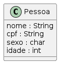
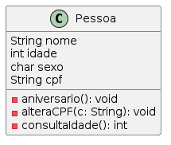
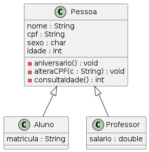

Linguagem JAVA
Antes de darmos início ao Conteúdo, gostaria de deixar algumas dicas da linguagem JAVA.
Iniciar um Arquivo Java como classe
O nome do arquivo de classes deve ser o mesmo nome que colocará em "<nome da Classe>", então será o nome.java, comece por:
public class <nome da Classe>{
/*Nas próximas linhas devem colocar os atributos da classe, como se fossem coluna de uma Tabela, o que está classe terá?*/
/*Primeiro coloca o tipo, e depois o nome da variável, exemplo:*/
String nome;
<tipo> <nome da variável>;
}
Os tipos de variáveis são:
| Tipo | Descrição |
|---|---|
| String | Palavras |
| char | 1 letra |
| int | Número |
| float, double | Números aproximados |
Get e Set
Por ser uma classe que integra as informações, tem dois tipos de códigos para gerar informações:
- get - retorna (ler)
- set - modificar (escrever)
Exemplo:
public String getNome() {
return nome;
}
public void setNome(String nome) {
this.nome = nome;
}
Main.java
O arquivo principal deve-se chamar por Main.java, como iniciar:
public static void main (String[] args){
/*código*/
}
Este arquivo é o principal, pois chama todas as classes e métodos deles.
Saída de Dados
A saída de dados ocorre pelo System.out. ..., as opções são:
| Tipos de saída de dados | |||
| System.out.println | Pula linha | Aceita método com sua variável | Não aceita com o "%" do tipo |
| System.out.print | Não pula linha | Aceita método com sua variável | Não aceita com o "%" do tipo |
| System.out.printf | Não pula linha | Não aceita método com sua variável | Aceita com o "%" do tipo |
Entrada de Dados
Usaremos no código a palavra Scanner, mas para isto precisamos usar a biblioteca import java.util.Scanner; na 1ª linha do código, e para implementar seria assim:
import java.util.Scanner;
public static void main (String[] args){
Scanner s = new Scanner(System.in);
Pessoa p1= new Pessoa();
tem.out.println("Digite o nome da pessoa: ");
p1.setNome(s.nextLine());
}
ou
import java.util.Scanner;
public static void main (String[] args){
Scanner s = new Scanner(System.in);
Pessoa p1= new Pessoa();
tem.out.println("Digite o nome da pessoa: ");
p1.nome = s.nextLine();
}
| Em código | Tipos de entrada de dados |
| nextLine() | String |
| next().charAt(0) | char |
| nextInt() | int |
| nextDouble() | double |
Programação Orientado à Objeto
Código-fonte contém algoritmos escrito em algum tradutor feito por linguagens de programações (LP).
Existem vários estilos de um LP, como:
- Estruturado;
- Funcional;
- Orientado à Objetos.
Na Programação Orientado à Objeto, existem:
- Abstração e simulação do mundo real;
- Composição e interação entre objetos;
- Reaproveitamento de códigos.
A linguagem que vamos usar será JAVA. Um código orientado à objeto que é composto por classes, objetos e pelo relacionamento entre eles.
Classe
Uma classe representa um conjunto de objetos. Exemplo:
- Classe: Pessoa
- Atributos: nome, idade, sexo, cpf
- Tipos: String, int, char
Para virar em código de JAVA:
Arquivo: Pessoa.java
class Pessoa{
String nome, cpf;
char sexo;
int idade;
}
Objeto
Um objeto é uma instância de uma classe. Cada objeto armazena seus dados através dos atributos da classe. Para a classe Pessoa, por exemplo, podemos criar objetos com os seguintes valores:
- Enzo, M, 20, 123.456.789-10
- Valentina, F, 18, 987.654.321-11
Para virar em código de JAVA:
Arquivo: Main.java
public static void main (String[] args){
Pessoa p1 = new Pessoa();
p1.nome = "Nome";
p1.cpf = "cpf";
p1.idade = 26;
p1.sexo = 'F';
}
Métodos
Definem o comportamento dos objetos, e como eles reagem a mensagens enviadas a ele. Usamos os métodos para acessar ou modificar o atributos de uma classe.
O modelo abaixo adiciona 3 métodos à classe Pessoa:

Arquivo: Pessoa.java
void aniversario(){
this.idade = this.idade + 1;
}
void atribuiCPF(String c){
this.cpf = c;
}
int consultaIdade(){
return this.idade;
}
Arquivo: Main.java
System.out.print("Idade atual: " + p1.consultaIdade() + "\n");
p1.aniversario();
System.out.print("Idade nova: " + p1.consultaIdade() + "\n");
p1.atribuiCPF("123.456.789-99");
System.out.print("Novo CPF: " + p1.cpf);
O que irá sair:
Idade atual: 26
Idade nova: 27
Novo CPF: 123.456.789-99
Construtores
A palavra new é responsável por "construir" um novo objeto da classe desejada. Sempre que isso ́é feito, o construtor da classe ́é executado.
Existem dois métodos para serem feitos na classe Pessoa (podendo usar um ou outro, ou os dois):
Arquivo: Pessoa.java
1º Modo:
Pessoa(){
System.out.println("Nova pessoa criada no sistema. \n");
}
2º Modo:
Pessoa(String n, String c, int d, char s) {
System.out.println("Nova pessoa criada no sistema. \n");
this.nome = n;
this.idade = d;
this.sexo = s;
this.cpf = c;
}
Herança
Herança em POO permite que uma classe possa ser derivada de outra classe. Um Aluno, por exemplo, é uma Pessoa. Dessa forma, um objeto da classe Aluno deve herdar todos os atributos e métodos da classe Pessoa, mas também pode ter seus atributos próprios (ex: número de matrícula). Da mesma forma, um Professor também é uma Pessoa. Além dos atributos da classe Pessoa, um Professor também possui seus próprios atributos (ex: salário). O diagrama a seguir representa a superclasse Pessoa (classe base) e as subclasses Aluno e Professor (classes derivadas):
Para virar em código de JAVA usamos a palavra extends:
Arquivo: Aluno.java
class Aluno extends Pessoa {
String matricula;
}
Arquivo: Professor.java
class Professor extends Pessoa {
double salario;
}
Cada vez que criarmos um objeto da classe Aluno, ele irá possuir todos os atributos de Pessoa, pois agora um Aluno é uma Pessoa. Uma grande vantagem da herança é o reuso. Quando usada corretamente, reduz o número de linhas de código, facilita a programação, a verificação de erros e futuras correções.
Para ter um construtor com estas heranças em formato de código em JAVA, será:
Arquivo: Aluno.java
public class Aluno extends Pessoa {
String matricula;
Aluno(String nome, String cpf, char sexo, int idade, String matricula) {
super(nome, cpf, sexo, idade);
this.matricula = matricula;
}
}
Arquivo: Professor.java
public class Professor extends Pessoa {
double salario;
Professor(String nome, String cpf, char sexo, int idade, double salario) {
super(nome, cpf, sexo, idade);
this.salario = salario;
}
}
A palavra super engloba a classe Pessoa com seus atributos, e só adiciona o que tem a mais na classe.
Reescrita de métodos
@Override
Reescrita de métodos permite reimplementar um método em uma subclasse que tenha o comportamento diferente do método na sua superclasse. Ou seja, os métodos que existem em Pessoa, podem ser usados para Aluno e Professor, vamos ver no código:
Sobrecarga de métodos
A sobrecarga de métodos ajuda a tornar o código mais intuitivo e versátil, reutilizando o mesmo nome de método para diferentes necessidades.
Encapsulamento
- public: indica que uma classe, variável ou método pode ser usado mesmo fora do pacote em que foram definidos.
- private: indica que uma variável ou método só pode ser acessado dentro da classe em que foi declarado.
- protected: indica que uma variável ou método só pode ser acessado na própria classe ou em suas subclasses.
Exemplo:
PRIVATE:
public class Pessoa {
private String nome;
private void setNome(String nome) {
this.nome = nome;
}
}
PROTECTED:
public class Pessoa {
protected String nome;
protected void setNome(String nome) {
this.nome = nome;
}
}
public class Aluno extends Pessoa {
public void imprimirNome() {
System.out.println(nome); // Acessível por ser protected
}
}
PUBLIC:
public class Pessoa {
public String nome;
public void setNome(String nome) {
this.nome = nome;
}
}
public class Main {
public static void main(String[] args) {
Pessoa p = new Pessoa();
p.nome = "Carlos"; // Acessível por ser public
p.setNome("Carlos"); // Acessível por ser public
}
}